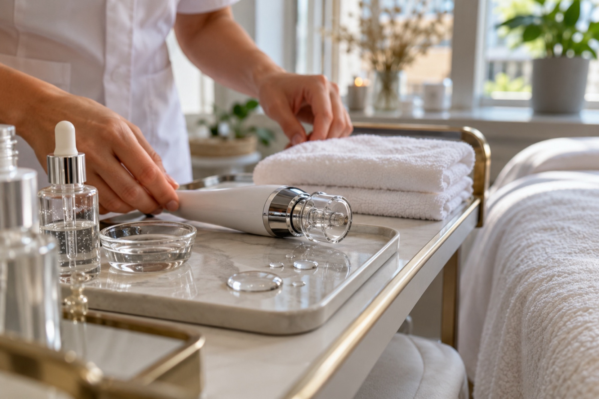

Aqua Facial / HydraFacial
Tiefenreinigung mit Wasser und Wirkstoffen. Danach sieht die Haut frisch und gepflegt aus.
- Ziel
- Gereinigte, mit Feuchtigkeit versorgte Haut
- Dauer
- Rund eine Stunde als Richtwert
- Ablauf
- Reinigen, Peelen, Absaugen, Wirkstoffpflege
- Nachpflege
- Sonnenschutz und milde Pflege